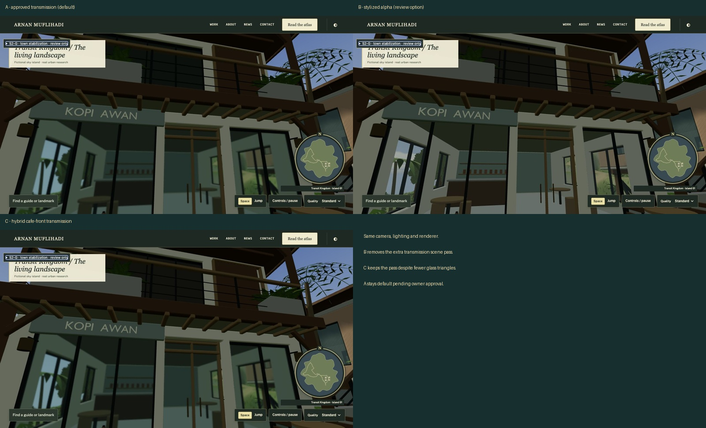

AR(N)AN URBAN ATLAS · LOCAL CONTROLLED REVIEWMarket Street: stabilization and glass study
Real game captures. Approved architecture preserved. Glass A remains the default. Owner approval pending; nothing deployed.

Same camera and lighting. B is recommended for lower rendering cost. A remains unchanged by default.
Original source files, terrain, world coordinates and portfolio are preserved. No public deployment or town expansion.